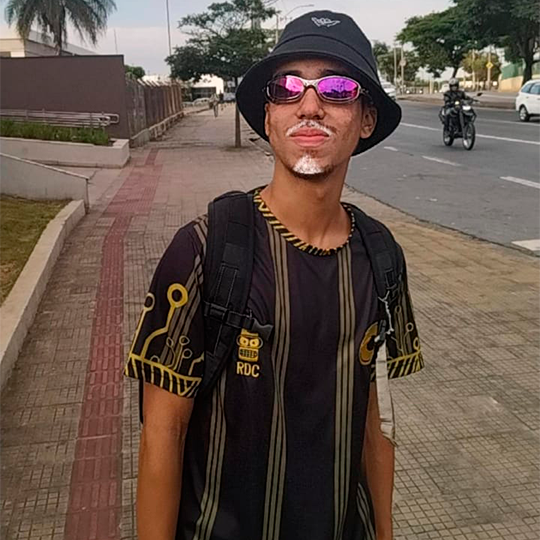
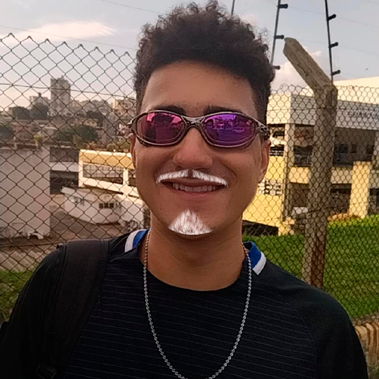
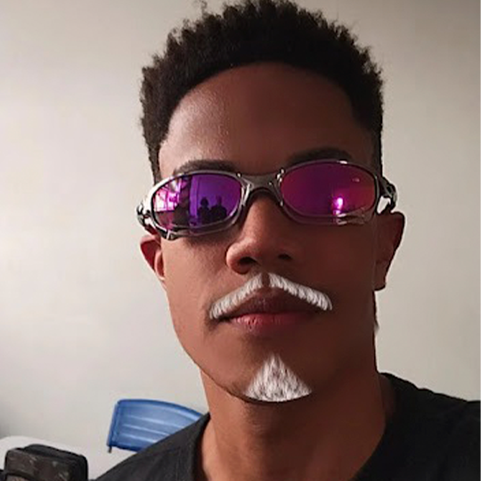

Essas foram as fontes
utilizadas para o trabalho!
Meu nome é Samuel Valadão e tenho 16 anos. Gosto bastante de jogar e assistir futebol, gosto de jogar alguns jogos onlines, e também gosto de assistir filmes. Hoje estudo no CEFET e estou cursando Redes, e pro futuro ainda tenho bastante incerteza sobre o que fazer.
Meu nome e Ricardo França, tenho 16 anos e estudo atualmente no CEFET MG na turma de Redes do terceiro ano. Nasci em BH, Minas Gerais e moro aqui até hoje.
Olá! Meu nome é Gabriel Comonian (mas pode me chamar só de Comonian se quiser) e atualmente eu estudo no Cefet-mg na turma de redes de computadores do terceiro ano. Nós fizemos esse site com muito carinho e dedicação, então esperamos que gostem!
Meu nome é Abner Mateus, tenho 16 anos. Entrei no Cefet em 2020 e tive meu terceiro contato com programação, ainda tenho muitas dúvidas mas busco sempre melhorar e aprimorar meus conhecimentos.